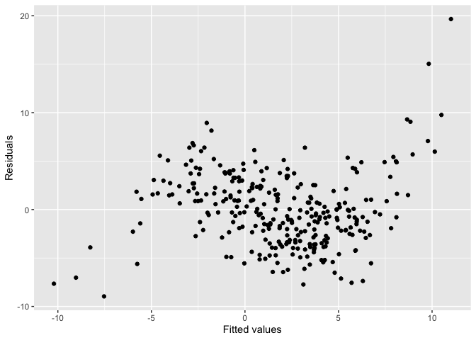
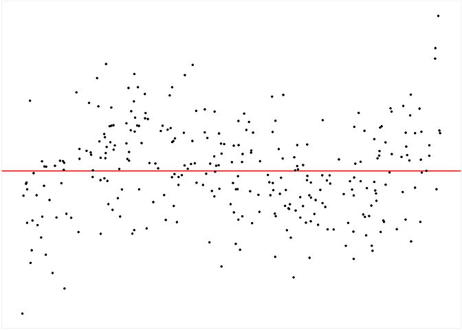
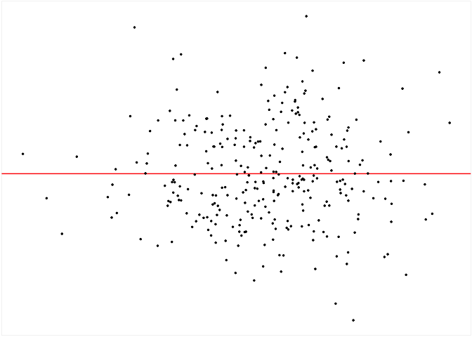
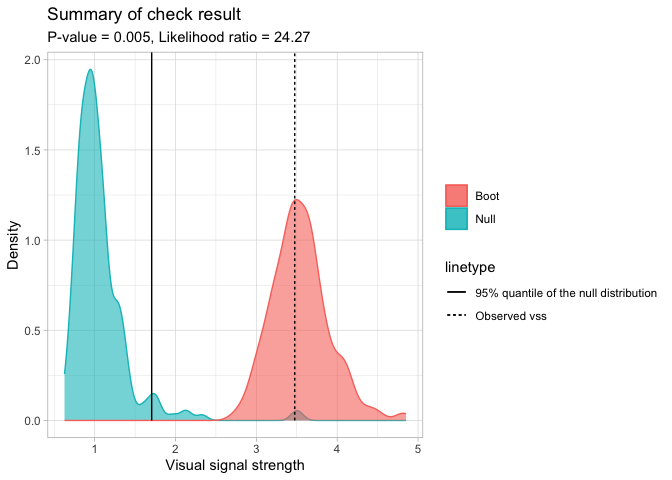

Buja et al. (2009) provides an inferential framework to assess whether residual plots indeed contain visual patterns inconsistent with the model assumptions. However, unlike conventional statistical tests that can be performed computationally in statistical software, the lineup protocol requires human evaluation of images. This characteristic makes it less suitable for large-scale applications, given the associated high labour costs and time requirements.
The autovi package aims to offer tools for automated visual inference of residual plots. Currently, it only supports diagnostic checks for classical normal linear regression models (CNLRM), as the underlying computer vision models are specifically trained for this model class. However, the autovi API is designed to be extensible to other model types. This means you can obtain predictions as long as you provide an appropriate method for generating null residuals through the null_method argument.
Installation
You can install the development version of autovi like so:
remotes::install_github("TengMCing/autovi")Trained Keras Models
All the available trained Keras models are listed in list_keras_models(). All the trained Keras models listed below will predict a visual signal strength for the visual patterns of the input residual plot. This visual signal strength is essentially an approximation of a Kullback–Leibler divergence based distance metric which quantifies the difference between the actual residual distribution and the reference residual distribution assumed under correct model specification. Details about the methodologies are provided in our draft paper https://github.com/TengMCing/auto_residual_reading/blob/master/paper/paper.pdf.
list_keras_models() %>% pull(model_name)
#> [1] "vss_32" "vss_64" "vss_128" "vss_phn_32" "vss_phn_64"
#> [6] "vss_phn_128"Different Keras models are trained with residual plots obtained from different linear regression models violating various model assumptions.
vss_32, vss_64 and vss_128 are trained with residual plots containing visual patterns indicating non-linearity and heteroskedasticity issues. The number in the model name represents the size of the input image. For instance, 32 means the input image has 32times32 pixels.
vss_phn_32, vss_phn_64 and vss_phn_128 are also trained with residual plots containing visual patterns indicating non-linearity and heteroskedasticity, but the visual patterns are more complex. Additionally, residual plots with visual patterns of non-normality are also used for these models.
Examples
For this example, we will be using the vss_phn_32 Keras model. The model can be obtained by using get_keras_model().
keras_mod <- get_keras_model("vss_phn_32")To illustrate the use of this package, we will use the visage package to define a data generating process and use an incorrectly specified model to fit the 300 simulated observations.
set.seed(10086)
dgp_mod <- visage::poly_model(x = visage::rand_uniform(-1, 1), sigma = 1)
this_dat <- dgp_mod$gen(300)
this_mod <- lm(y ~ x, data = this_dat)The residual plot of the fitted model shows a “S” shape indicating a non-linearity issue.
ggplot() +
geom_point(aes(this_mod$fitted.values, this_mod$residuals)) +
xlab("Fitted values") +
ylab("Residuals")
To run diagnostics for this fitted model, we can initialize the checker using auto_vi() and have a look at the input residual plot using the plot_resid() method.
checker <- auto_vi(fitted_mod = this_mod, keras_mod = keras_mod)
checker$plot_resid()
To predict the visual signal strength of this residual plot, simply use the vss() method.
checker$vss()
#> ✔ Predict visual signal strength for 1 image.
#> [1] 3.474873Having the visual signal strength of the residual plot is usually insufficient to determine if the model is correctly specified. Thus, we need to evaluate some null residual plots for comparison.
The checker includes a default method to generate null residuals consistent with the null hypothesis that the fitted model is correctly specified, which is the rotate_resid() method implementing the residual rotation technique. This method is only suitable for CLNRM.
checker$rotate_resid() %>%
checker$plot_resid()
To get predictions for null residual plots, one can use the null_vss() method. The keep_null_dat and keep_null_plot tells the method whether to preserve the null residuals and null residuals plots in the result. For models that needs to use a null generating method other than rotate_resid(), the function can be provided via the null_method argument. The only parameter of the provided function should be fitted_mod, which is the fitted model object. And it should return a data frame with two columns .fitted and .resid which are fitted values and null residuals respectively.
checker$null_vss(20L,
keep_null_dat = FALSE,
keep_null_plot = FALSE)
#> ✔ Generate null data.
#> ✔ Generate null plots.
#> ✔ Compute auxilary inputs.
#> ✔ Predict visual signal strength for 20 images.
#> # A tibble: 20 × 1
#> vss
#> <dbl>
#> 1 1.54
#> 2 2.36
#> 3 1.89
#> 4 1.15
#> 5 1.12
#> 6 0.944
#> 7 1.55
#> 8 1.34
#> 9 0.791
#> 10 1.02
#> 11 1.06
#> 12 0.943
#> 13 1.24
#> 14 0.918
#> 15 1.26
#> 16 0.958
#> 17 0.744
#> 18 1.04
#> 19 0.967
#> 20 1.44If we want to measure the variation of the visual signal strength of the residual plot, we can use the boot_vss() method to get bootstrapped visual signal strength. This method resamples the observations with replacement and refitt the regression model. Similarly, keep_boot_dat and keep_boot_plot tells the method whether to preserve bootstrapped residuals and plots.
checker$boot_vss(20L,
keep_boot_dat = FALSE,
keep_boot_plot = FALSE)
#> ✔ Generate bootstrapped data.
#> ✔ Generate bootstrapped plots.
#> ✔ Compute auxilary inputs.
#> ✔ Predict visual signal strength for 20 images.
#> # A tibble: 20 × 1
#> vss
#> <dbl>
#> 1 3.01
#> 2 3.57
#> 3 3.20
#> 4 3.67
#> 5 3.24
#> 6 3.05
#> 7 2.90
#> 8 3.73
#> 9 3.40
#> 10 4.07
#> 11 3.43
#> 12 3.11
#> 13 3.24
#> 14 3.79
#> 15 3.59
#> 16 4.01
#> 17 3.73
#> 18 3.78
#> 19 3.68
#> 20 3.17To run a comprehensive check including the analysis of null residuals and bootstrapped residuals, use the check() method.
checker$check(null_draws = 200L, boot_draws = 200L)The check result is stored in the check_result attribute.
str(checker$check_result)
#> List of 8
#> $ null : tibble [200 × 1] (S3: tbl_df/tbl/data.frame)
#> ..$ vss: num [1:200] 0.758 0.971 3.472 0.84 0.812 ...
#> $ boot : tibble [200 × 1] (S3: tbl_df/tbl/data.frame)
#> ..$ vss: num [1:200] 3.55 4.14 3.56 2.93 3.66 ...
#> $ vss : num 3.47
#> $ p_value : num 0.005
#> $ boot_p_value : num 0
#> $ boot_likelihood: Named num 1.22
#> ..- attr(*, "names")= chr "boot_likelihood"
#> $ null_likelihood: Named num 0.0503
#> ..- attr(*, "names")= chr "null_likelihood"
#> $ lr_ratio : Named num 24.3
#> ..- attr(*, "names")= chr "lr_ratio"A summary plot can be drawn with the summary_plot() method. The solid line is the 95% sample quantile of the visual signal strength predicted for null residual plots. The dot line is the visual signal strength predicted for the original residual plot. The blue density curve indicates the distribution of visual signal strength predicted for null residual plots. And the red density curve indicates the distribution of visual signal strength predicted for bootstrapped residual plots.
The p-value is obtained by computing the ratio of null visual signal strength greater than or equal to observed visual signal strength. The red area along with the solid line indicates how often the fitted model would be considered incorrectly specified if the data can be repetitively drawn from the same data generating process.
For this example, the H0 is rejected because of small p-value. It can also be observed that almost all the time the refitted models will be considered as incorrectly specified, so this is a clear rejection. Furthermore, since two density curves are very different from each other, it is very unlikely the original residuals are from the same distribution of null residuals.
checker$summary_plot()